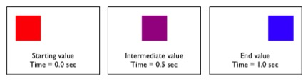

Your browser doesn't support the features required by
impress.js, so you are presented with a simplified version of this
presentation.
For the best experience please use the latest Chrome, Safari
or Firefox browser.
CSS3 Transitions
Eric Kizaki
“CSS Transitions allows property changes in CSS values to occur
smoothly over a specified duration.”
-http://www.w3.org/TR/css3-transitions/

Example
.railcar {
height: 100px;
width: 200px;
background-color: red;
transition-property: width, background-color;
transition-duration: 2s, 4s;
transition-timing-function: linear;
transition-delay: 0s;
}
.railcar:hover {
width: 600px;
background-color: green;
}
Animatable properties
background border bottom clip color
font-size font-weight height left letter-spacing
line-height margin max-width min-height
min-width opacity outline padding right
text-indent text-shadow top vertical-align visibility width word-spacing z-index
*also SVG ones
- Transition Duration default of 0, which means no animation
- Transition Timing Functions: ease | linear | ease-in | ease-out | ease-in-out | step-start | step-end | steps| cubic-bezier
- Transition Delay of a negative number starts the animation further in
Pros
*You will use JavaScript
"While authors can use transitions to create dynamically changing content,
dynamically changing content can lead to seizures in some users.
For information on how to avoid content that can lead to seizures,
see Guideline 2.3: Seizures:
Do not design content in a way that is known to cause seizures ([WCAG20]).""
-http://www.w3.org/TR/css3-transitions/